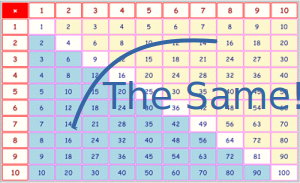
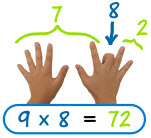

Multiplication Tips and Tricks
Some Tips and Tricks
Here are some tips and tricks to help you with multiplication.
Everyone thinks differently, so just ignore any tricks that don't make sense to you.
First of all: Memory is your best friend!
With the multiplication table in your memory you simply know that 3×5=15, 6×8=48 etc.
Memory is fast, too.
Math Trainer - Multiplication is designed to
help you remember your tables.
The Best Trick

Every multiplication has a twin, which may be easier to remember.
For example if you forget 8×2, you might remember 2×8=16. This way, you only have to remember half the table.
Tricks by Number
add the number to itself (in other words, double it)
Example 2×9 = 9+9 = 18
double, then double again
Example 4×9: double 9 is 18, double 18 is 36
Cut in half, then times 10
Example: 5x6: Cut 6 in half to get 3, then times 10 for 30
Or times 10 then cut in half
Example: 5x9: 9 times 10 is 90, then cut in half for 45
Also the last digit goes 5, 0, 5, 0, ... like this: 5, 10, 15, 20, ...
when you multiply 6 by an even number, they both end in the same digit.
Examples: 6×2=12, 6×4=24, 6×6=36, etc
Think "5,6,7,8": 56=7×8
Double, double, double!
Example: 8×6: double 6 is 12, double 12 is 24, double 24 is 48
is 10× the number minus the number.
Example: 9×6 = 10×6−6 = 60−6 = 54
the ones digit goes 9, 8, 7, 6, ...: 9, 18, 27, 36, 45, ...
the tens digit goes 0, 1, 2, 3, ...: 9, 18, 27, 36, 45, ...
subtract one to get the tens digit, and the tens and ones digit together make 9
Example:
9×5: tens digit is 4, 4 and 5 make 9, so 45
Example:
9×8: tens digit is 7, 7 and 2 make 9, so 72

your hands can help! Example: to multiply 9 by 8, hold your 8th finger down, and count "7" and "2", the answer is 72
put a zero after it
Example: 10×2 = 20
up to 11x9: just repeat the digit. Example: 11x4 = 44
for 11×10 to 11×18: write the sum of the digits between the digits
Example: 11×15 = 1(1+5)5 = 165
Note: this works for any two-digit number, but when the
sum of the digits is more than 9, we need to"carry the one".
Example: 11×75 = 7(7+5)5 = 7(12)5 = 825.
is 10× plus 2×
Example: 12×4 = 40+8 = 48
multiply by 10, then add half again
Example: 15×4 = 40+20 = 60
Example: 15×9 = 90+45 = 135
multiply by 10, then double
Example: 20×4 = 40+40 = 80
Example: 20×7 = 70+70 = 140
Remembering Squares Can Help
This may not work for you, but it worked for me. I like remembering the squares (where you multiply a number by itself):
And this gives us one more trick. When the numbers we are multiplying are separated by 2 (example 7 and 5), then multiply the number in the middle by itself and subtract one. See this:
| 5×5 = 25 is just one bigger than 6×4 = 24 |
| 6×6 = 36 is just one bigger than 7×5 = 35 |
| 7×7 = 49 is just one bigger than 8×6 = 48 |
| 8×8 = 64 is just one bigger than 9×7 = 63 |
| etc ... |